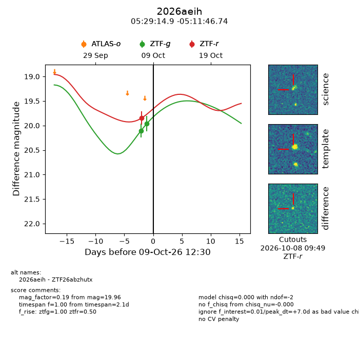
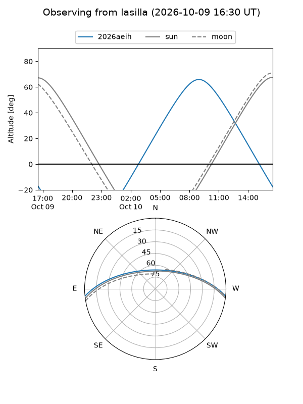
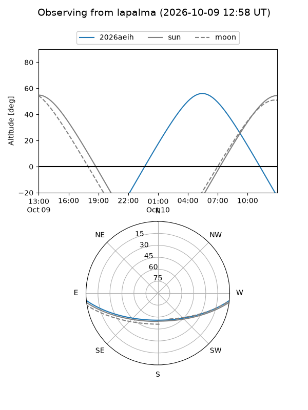
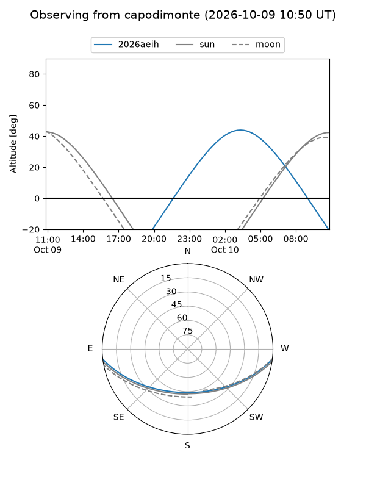
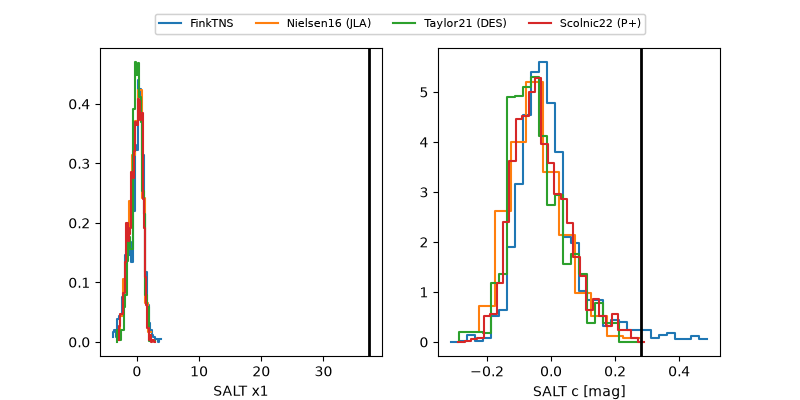

2026aeih
Target 2026aeih at 2026-10-09 12:32
Aliases and brokers:
FINK-ZTF: ztf.fink-portal.org/ZTF26abzhutx
Lasair-ZTF: lasair-ztf.lsst.ac.uk/objects/ZTF26abzhutx
ALeRCE-ZTF: alerce.online/object/ZTF26abzhutx
YSE-PZ: ziggy.ucolick.org/yse/transient_detail/2026aeih
TNS name: wis-tns.org/object/2026aeih
Direct TNS query: direct search
alt names
ZTF26abzhutx (ztf,fink_ztf)
2026aeih (tns,yse)
Coordinates:
equatorial (ra, dec) = 82.3122,-5.19632
equatorial (HMS+DMS) = 05:29:14.93,-05:11:46.74
galactic (l, b) = (208.1032,-20.63307)
Flags:
peak dt: +7.0
Photometry:
last ztfg=19.96, ztfr=19.85
2 ztfg, 1 ztfr detections
Lightcurve

Visibility



Additional plots
